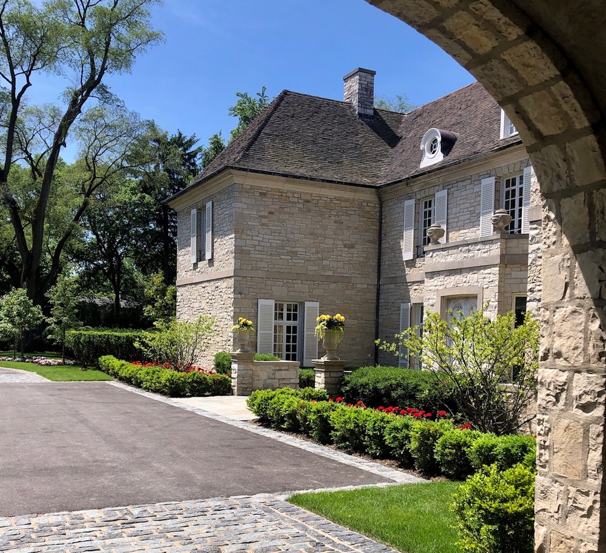

During this 50th anniversary year, no one would have been surprised had the Lake Forest Preservation Foundation (LFPF) quietly celebrated its many accomplishments and eschewed any new initiatives. But under Executive Director Jennifer McGregor, who replaced longtime leader Marcy Kerr in 2024, the foundation is charging forward with important work as it continues a decades-long collaboration with the City of Lake Forest that has helped preserve the community's distinctive architectural and historic character.
The foundation is involved with a project at the Lake Forest Cemetery where headstones with no living descendants that need repair, cleaning and attention are being inventoried. The non-profit has been consulting on the renovation of the courtyards and the historic 1931 rooms at Lake Forest Library, and it just launched a new, easy-to-navigate website at lfpf.org.
That's not to say there won't be celebrations this year. On the afternoon of May 3, Bank Lane will be shut down as LFPF celebrates all its past Preservation Award winners, which encompasses hundreds of properties. A black-and-white gala with a live auction emceed by Bill Kurtis will take place June 26 at the Glen Rowan House at Lake Forest College. An exhibit highlighting a half century of accomplishments will open Aug. 20 at the History Center of Lake Forest-Lake Bluff. And in combination with the Ragdale Foundation, which is also celebrating its 50th anniversary, a symposium featuring thought leaders such as PBS mainstay Geoffrey Baer and others will debate topics like development vs. preservation Oct. 16–18.
A native Lake Forester with a background in interior architecture design, McGregor lives on the Albert Lasker estate in a restored David Adler house — one that actually won a Preservation Award in 2023. She is passionate about keeping the visual and architectural character of the city intact.
“You see what happens to other suburbs and the downtown development — we can’t let that happen,” she said. “Our greatest achievement at the foundation is not a single moment but 50 years of steady, principled advocacy.”
Along with advocates such as the LFPF, preservation in Lake Forest has succeeded because of collaboration among residents, property owners, and the city’s commitment to thoughtful planning and design standards. As well, since 1997, the Historic Preservation Commission has been responsible for reviewing projects that are inside the boundaries of Lake Forest’s historic districts and those that affect individual landmark properties in the city.
Another new LFPF initiative this year is the creation of the Adrian Smith Preservationist Award. Named after the noted Lake Forest architect who has meticulously restored and cared for properties, McGregor said it will be awarded “whenever there is something or someone who is worthy of personifying that spirit.”
“It’s not necessarily the property — it’s the person behind the work,” she said. “It’s intriguing to find out why they invest the time. It’s not for the faint of heart.”

McGregor and her team have worked hard to digitize their assets over the past 18 months. Helped by its first archivist, they have shuffled through 50 years of files and lockers full of drawings and blueprints in their Gorton Center office.
“I was trying to understand what we had when I started,” McGregor explained. “Some items were in piles with sticky notes on them.”
The foundation’s archival team has gathered collections of architectural drawings that have been recently donated to the Art Institute of Chicago and the History Center for the benefit of future generations.
“We digitized VHS tapes and DVDs to share on our YouTube channel,” McGregor said. “We partnered with the library, who guided us toward efficient platforms to upload our past program videos and scan thousands of photographs.”
On top of that, the foundation (which is funded almost entirely by donors) used artificial intelligence to index 50 years of newsletters, which can now be easily found on the website.
“That was something Art Miller had dreamed of doing,” McGregor said of the former Lake Forest College archivist, who has been a mainstay at the foundation.